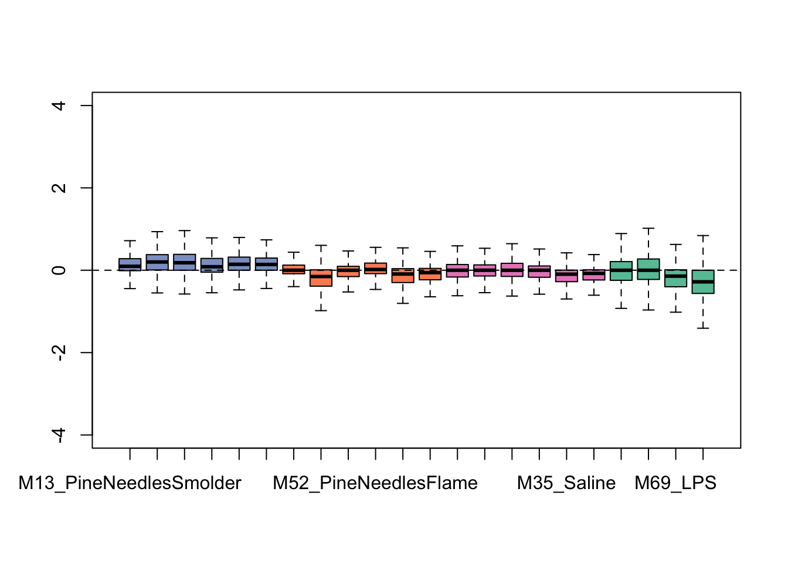

Chapter 9 Controlling for Sources of Sample Heterogeneity
Because these transcriptomic data were generated from mouse lung tissues, there is potential for these samples to show heterogeneity based on underlying shifts in cell populations (e.g., neutrophil influx) or other aspects of sample heterogeneity (e.g., batch effects from plating, among other sources of heterogeneity that we may want to control for). For these kinds of complex samples, there are data processing methods that can be leveraged to minimize the influence of these sources of heterogeneity. Example methods include Remove Unwanted Variable (RUV), which is discussed here, as well as others (e.g., Surrogate Variable Analysis (SVA)).
Here, we leverage the package called RUVseq to employ RUV on this sequencing dataset. Script was developed based off a helpful online training tutorial (LAUREN- DO YOU REMEMBER THIS WEBSITE THAT WE USED HERE?), as well as its parent Bioconductor website, vignette, and original publication.
9.0.0.1 Steps in carrying out RUV using RUVseq on this example dataset:
# First we store the treatment IDs and exposure conditions as a separate vector
ID <- coldata$ID
# And differentiate our treatments and control conditions, first by grabbing the groups associated with each sample
groups <- as.factor(coldata$Group)
# let's view all the groups
groups## [1] PineNeedlesSmolder_4h_Lung PineNeedlesSmolder_4h_Lung
## [3] PineNeedlesSmolder_4h_Lung PineNeedlesSmolder_4h_Lung
## [5] PineNeedlesSmolder_4h_Lung PineNeedlesSmolder_4h_Lung
## [7] PineNeedlesFlame_4h_Lung PineNeedlesFlame_4h_Lung
## [9] PineNeedlesFlame_4h_Lung PineNeedlesFlame_4h_Lung
## [11] PineNeedlesFlame_4h_Lung PineNeedlesFlame_4h_Lung
## [13] Saline_4h_Lung Saline_4h_Lung
## [15] Saline_4h_Lung Saline_4h_Lung
## [17] Saline_4h_Lung Saline_4h_Lung
## [19] LPS_4h_Lung LPS_4h_Lung
## [21] LPS_4h_Lung LPS_4h_Lung
## 4 Levels: LPS_4h_Lung PineNeedlesFlame_4h_Lung ... Saline_4h_Lung# then setting a control label
ctrl <- "Saline_4h_Lung"
# and extracting a vector of just our treatment groups
trt_groups <- setdiff(groups,ctrl)
# let's view this vector
trt_groups## [1] "PineNeedlesSmolder_4h_Lung" "PineNeedlesFlame_4h_Lung"
## [3] "LPS_4h_Lung"RUVseq contains its own set of plotting and normalization functions, though requires input of what’s called an object of S4 class SeqExpressionSet. Let’s go ahead and make this object, using the RUVseq function ‘newSeqExpressionSet’:
exprSet <- newSeqExpressionSet(as.matrix(countdata),phenoData = data.frame(groups,row.names=colnames(countdata)))And then use this object to generate some exploratory plots using built-in tools within RUVseq. First starting with some bar charts summarizing overall data distributions per sample:

We can see from this plot that some of the samples show distributions that may vary from the overall - for instance, one of the flaming pine needles-exposed samples (in orange) is far lower than the rest.
Then viewing a PCA plot of these samples:

This PCA plot shows pretty good data distributions, with samples mainly showing groupings based upon exposure condition (e.g., LPS), which is to be expected. With this, we can conclude that there may be some sources of unwanted variation, but not a huge amount. Let’s see what the data look like after running RUV.
Now to actually run the RUVseq algorithm, to control for potential sources of sample heterogeneity, we need to first construct a matrix specifying the replicates (samples of the same exposure condition):
# Construct a matrix specifying the replicates (samples of the same exposure condition) for running RUV
differences <- makeGroups(groups)
# Viewing this new matrix
head(differences)## [,1] [,2] [,3] [,4] [,5] [,6]
## [1,] 19 20 21 22 -1 -1
## [2,] 7 8 9 10 11 12
## [3,] 1 2 3 4 5 6
## [4,] 13 14 15 16 17 18LAUREN - CAN WE PLEASE ADD SOME TEXT HERE DESCRIBING WHAT THIS MATRIX IS SHOWING?
LK DRAFTED TEXT- This matrix groups the samples by exposure condition. Here, each of the four rows represents one of the four exposure conditions, and each of the six columns represents a possible sample. Since the LPS exposure condition only had four samples, instead of six like the rest of the exposure conditions, a value of -1 is automatically used as a place holder to fill out the matrix. The samples in the matrix are identified by the index of the sample in the previously defined ‘groups’ factor that was used to generate the matrix. For example, the PineNeedlesSmolder_4h_Lung samples are the the first six samples contained in the ‘groups’ factor, so in the matrix, samples of this exposure condition are identified as ‘1’,‘2’,‘3’,‘4’,‘5’, and ‘6’.
Let’s now implement the RUVseq algorithm and, for this example, capture one factor (k=1) of unwanted variation. Note that the k parameter can be modified to capture additional factors, though in this case, it appears that the majority of unwanted variation is likely captured through just a single factor, as shown below.
# Now capture 1 factor (k=1) of unwanted variation
ruv_set <- RUVs(exprSet, rownames(countdata), k=1, differences) This results in a list of objects within ‘ruv_set’, which include the following important pieces of information that are used in the final statistical model:
- Estimated factors of unwanted variation are provided in the phenoData object, as viewed using the following:
## groups W_1
## M13_PineNeedlesSmolder PineNeedlesSmolder_4h_Lung 1.3777900
## M14_PineNeedlesSmolder PineNeedlesSmolder_4h_Lung 1.2392662
## M15_PineNeedlesSmolder PineNeedlesSmolder_4h_Lung 1.0687702
## M16_PineNeedlesSmolder PineNeedlesSmolder_4h_Lung 1.2448747
## M17_PineNeedlesSmolder PineNeedlesSmolder_4h_Lung 1.3156003
## M18_PineNeedlesSmolder PineNeedlesSmolder_4h_Lung 1.4136600
## M49_PineNeedlesFlame PineNeedlesFlame_4h_Lung 1.3343115
## M50_PineNeedlesFlame PineNeedlesFlame_4h_Lung 0.4446084
## M51_PineNeedlesFlame PineNeedlesFlame_4h_Lung 1.0172990
## M52_PineNeedlesFlame PineNeedlesFlame_4h_Lung 1.0332373
## M53_PineNeedlesFlame PineNeedlesFlame_4h_Lung 0.7746752
## M54_PineNeedlesFlame PineNeedlesFlame_4h_Lung 1.0011086
## M31_Saline Saline_4h_Lung 0.6582117
## M32_Saline Saline_4h_Lung 1.2518829
## M33_Saline Saline_4h_Lung 1.1892456
## M34_Saline Saline_4h_Lung 1.2607852
## M35_Saline Saline_4h_Lung 1.3141520
## M36_Saline Saline_4h_Lung 1.4335200
## M67_LPS LPS_4h_Lung 1.0341947
## M68_LPS LPS_4h_Lung 1.2823240
## M69_LPS LPS_4h_Lung 1.4460347
## M70_LPS LPS_4h_Lung 1.4376930- Normalized counts obtained by regressing the original counts on the unwanted factors (normalizedCounts object within ‘ruv_set’), as viewed using the following:
# viewing the head of the normalized count data, accounting for unwanted variation
head(normCounts(ruv_set))## M13_PineNeedlesSmolder M14_PineNeedlesSmolder
## 0610009B22Rik_56046 4 5
## 0610010F05Rik_69119 2552 2630
## 0610010F05Rik_74637 17 13
## 0610010K14Rik_31619 1602 1774
## 0610010K14Rik_31873 711 1009
## 0610010K14Rik_68949 23 25
## M15_PineNeedlesSmolder M16_PineNeedlesSmolder
## 0610009B22Rik_56046 8 8
## 0610010F05Rik_69119 2474 1634
## 0610010F05Rik_74637 17 3
## 0610010K14Rik_31619 1639 1722
## 0610010K14Rik_31873 819 992
## 0610010K14Rik_68949 19 28
## M17_PineNeedlesSmolder M18_PineNeedlesSmolder
## 0610009B22Rik_56046 6 4
## 0610010F05Rik_69119 2343 2352
## 0610010F05Rik_74637 12 7
## 0610010K14Rik_31619 1979 1726
## 0610010K14Rik_31873 889 888
## 0610010K14Rik_68949 20 30
## M49_PineNeedlesFlame M50_PineNeedlesFlame
## 0610009B22Rik_56046 4 5
## 0610010F05Rik_69119 1767 1563
## 0610010F05Rik_74637 12 6
## 0610010K14Rik_31619 1480 1134
## 0610010K14Rik_31873 586 599
## 0610010K14Rik_68949 23 27
## M51_PineNeedlesFlame M52_PineNeedlesFlame
## 0610009B22Rik_56046 4 4
## 0610010F05Rik_69119 1918 1711
## 0610010F05Rik_74637 4 9
## 0610010K14Rik_31619 1390 1763
## 0610010K14Rik_31873 683 797
## 0610010K14Rik_68949 26 27
## M53_PineNeedlesFlame M54_PineNeedlesFlame M31_Saline
## 0610009B22Rik_56046 5 5 3
## 0610010F05Rik_69119 1751 1582 1891
## 0610010F05Rik_74637 6 3 10
## 0610010K14Rik_31619 1370 1419 1340
## 0610010K14Rik_31873 593 647 561
## 0610010K14Rik_68949 20 24 19
## M32_Saline M33_Saline M34_Saline M35_Saline M36_Saline
## 0610009B22Rik_56046 2 4 3 4 4
## 0610010F05Rik_69119 2507 2518 2524 1831 1878
## 0610010F05Rik_74637 7 7 5 7 8
## 0610010K14Rik_31619 1563 1632 1438 1280 967
## 0610010K14Rik_31873 685 815 703 646 526
## 0610010K14Rik_68949 16 21 19 22 20
## M67_LPS M68_LPS M69_LPS M70_LPS
## 0610009B22Rik_56046 3 2 4 5
## 0610010F05Rik_69119 1906 1597 1461 1201
## 0610010F05Rik_74637 6 6 7 5
## 0610010K14Rik_31619 964 1012 776 638
## 0610010K14Rik_31873 622 702 522 496
## 0610010K14Rik_68949 21 21 18 15Let’s again generate an exploratory plot using this updated dataset, focusing on the bar chart view since that was the most informative pre-RUV. Here are the updated bar charts summarizing overall data distributions per sample:

This plot shows overall tighter data that are more similarly distributed across samples. Therefore, it is looking like this RUV addition improved the overall distribution of this dataset. It is important not to over-correct/over-smooth your datasets, so implement these types of pre-processing steps with caution. One strategy that we commonly employ to gage whether data smoothing is needed/applied correctly is to run the statistical models with and without correction of potential sources of heterogeneity, and critically evaluate similarities vs differences produced in the results.